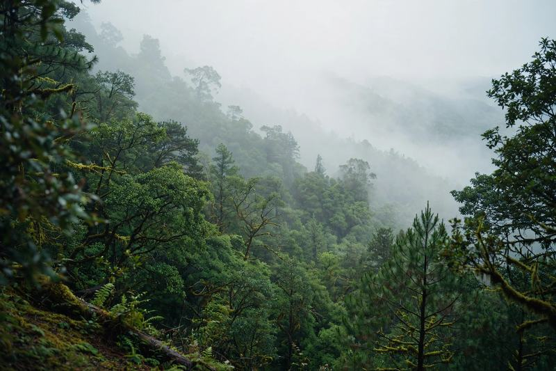

菩萨奇是柬埔寨菩萨省的地名，属于惠安系产区。香韵以凉意、清甜、花香为主，室温下就有明显凉意，上炉后凉意更突出，甜味跟在后面，尾调干净。
凉意是菩萨奇的招牌。和芽庄的清甜凉意比，菩萨奇的凉更直接、更持久；和奇楠的凉意比，菩萨奇的凉更温和、更日常。
菩萨奇料的油线细腻，颜色棕褐，深浅过渡自然。好料油脂丰富，密度中等，香韵和油脂是挂钩的：油脂越丰富，凉意越足。
外观上，菩萨奇料的木质纹理清楚，油脂和木质交错。太黑发亮、油线像画上去的，要警惕泡油和染色。
菩萨奇上炉之后，凉意最先出来，清凉透亮；温度升高后甜味跟上来，花香明显；尾调干净，没有杂味。建议从低温开始试，120 度、150 度、180 度各闻一次，凉意和甜味的变化很明显。
温度太高会糊，凉意会被糊味盖住。电熏炉低温慢品，才能闻到菩萨奇完整的层次。
喜欢清凉香韵的人，菩萨奇是很好的选择。夏天品香、提神醒脑、日常熏香，菩萨奇的凉意都很合拍。
喜欢醇厚药香的人，可能会觉得菩萨奇太凉、太清。这时候可以看看星洲系的料，或者缅甸料。口味没有对错，只有合不合适。
第一，凉意可以造假。薄荷脑、冰片之类的物质也能做出凉意，但凉得发冲、发薄、持续短，和菩萨奇沉稳持久的凉完全不同。凉意要和成分检测一起看。
第二，产区名不能当真假证明。证书只证明材质，不证明产地。溯源说不清的，先别买。
第三，亲自闻。凉意足不清凉、甜味自不自然，闻一次就知道了。
两个产区都是惠安系，都是清甜凉意，差别在凉意的强度和香韵的细节：菩萨奇的凉更直接，芽庄的甜更明显。价格上，芽庄名气大，价格通常更高。
选哪个，看你的口味和预算。喜欢凉的选菩萨奇，喜欢甜的选芽庄，预算有限的先看菩萨奇。条件允许的话，两种碎料各买一点，对比着闻。
| 看什么 | 菩萨奇常见表现 |
|---|---|
| 香韵 | 凉意突出，清甜带花香 |
| 油脂 | 油线细腻，颜色棕褐 |
| 凉意 | 沉稳持久，不是冲、薄、短 |
| 价格 | 通常低于芽庄，跨度也不小 |
| 适合 | 喜欢清凉香韵、日常品香的人 |